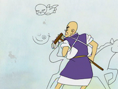
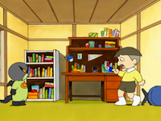
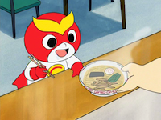
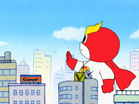
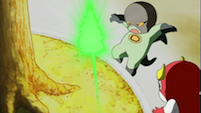
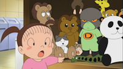
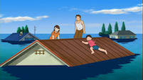

エクラアニマルが生んだ謎のキャラ。
かわいいけどホントはいろんな力を持っている、やればできる子。
みんなのそばにもきっといる。
今日もどこからか現れて、こっそり私たち大人を見ているかもしれません。
駄洒落と擬音と漫画の国、我が日本国は、戦後 少年少女向けに多くのヒーローを生み出してきました。悪をやっつける正義のヒーローは、今も少年の胸を熱くしているのでしょう。
しかしそのヒーローの思いとはウラハラに、現実の大人の社会には悪がはびこっています。その影で、どれだけ多くの人が苦しんでいるのでしょうか...。
正義に燃えた少年の心は一体どこへ行ってしまったのでしょうか。
正義のヒーローは所詮ヴァーチャルの世界でのみ活躍するだけなのでしょうか。
ヒーローは、作者がお金を儲けるためだけにあるのでしょうか。否、正義のヒーローは常に弱気を助け、強気をくじくために行動するのです。
常に、反権力なのです。
キャラ丸くんとドク丸くんは暴力は使いませんが、ゴミ拾いはします。
エコキャップも集めています。献血のお手伝いもします。もちろん現実社会でも。そして子どもたちに求められれば、どこへでも行きます。そんなヒーローとして生まれたのです。






